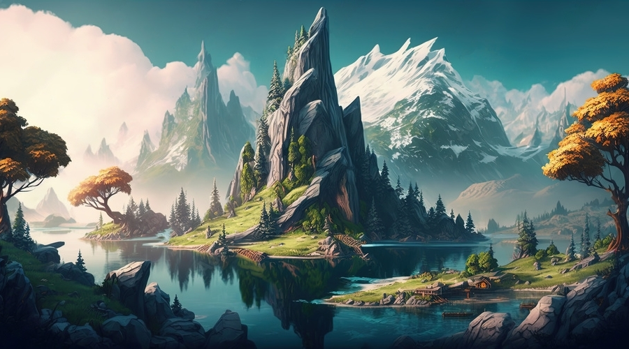
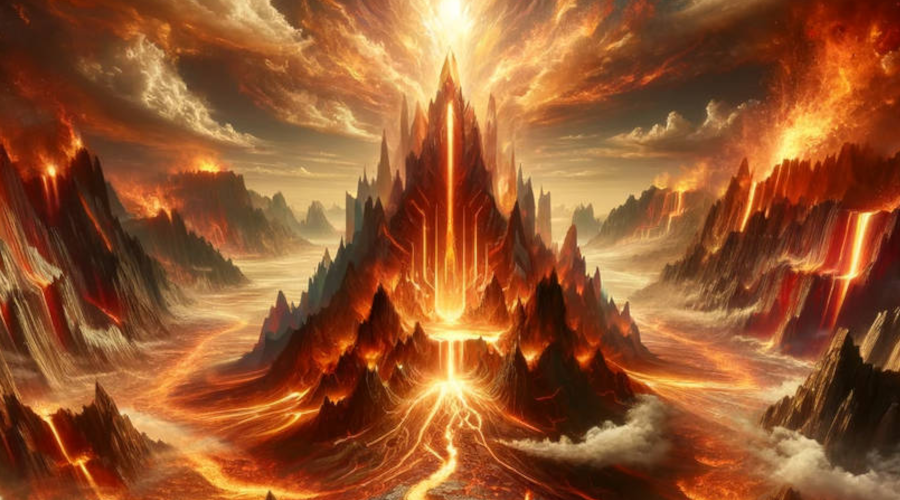
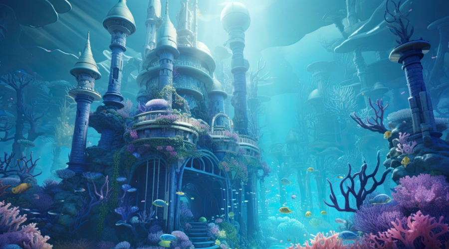
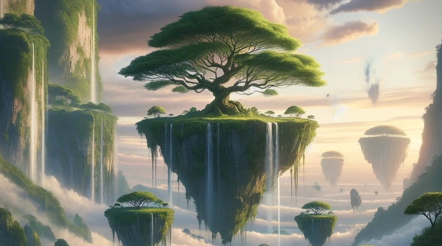
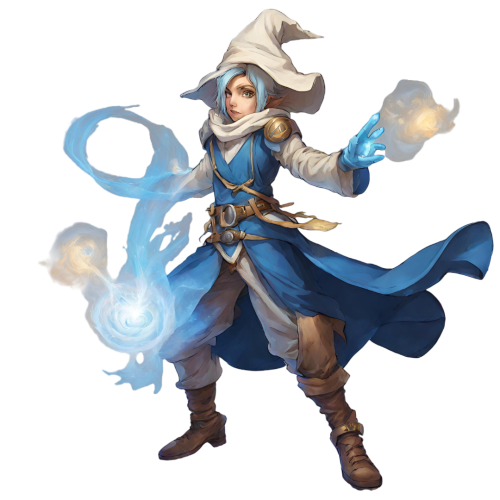
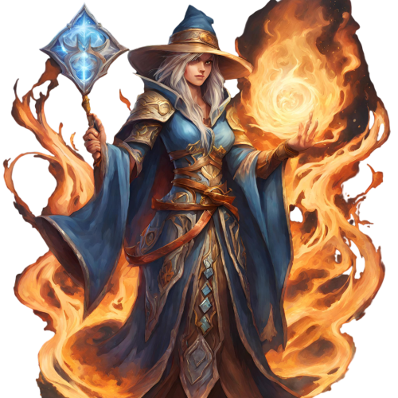
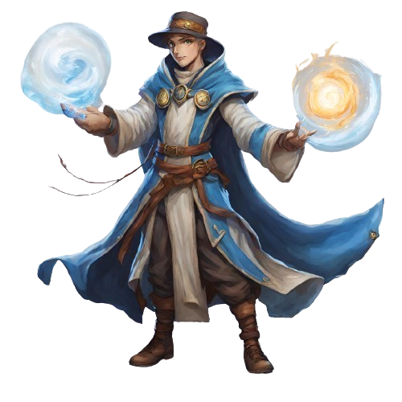

Les Gardiens de l'Équilibre
Le Lore
Dans un monde magique où les éléments règnent en maître, chaque royaume est gouverné par un élément sacré.
-

Le Royaume de la Terre
Des montagnes majestueuses s'élevant vers le ciel où d'anciennes forêts abritent des créatures mystiques.
-

Le Royaume du Feu
Un désert brûlant où des volcans crachent des flammes et où les forgerons créent des armes puissantes.
-

Le Royaume de l'Eau
Un monde maritime mystérieux, où les océans recèlent de secrets profonds.
-

Le Royaume de l'Air
Des citadelles flottantes dans les cieux abritant des sages et des voyageurs.
Caractéristiques


